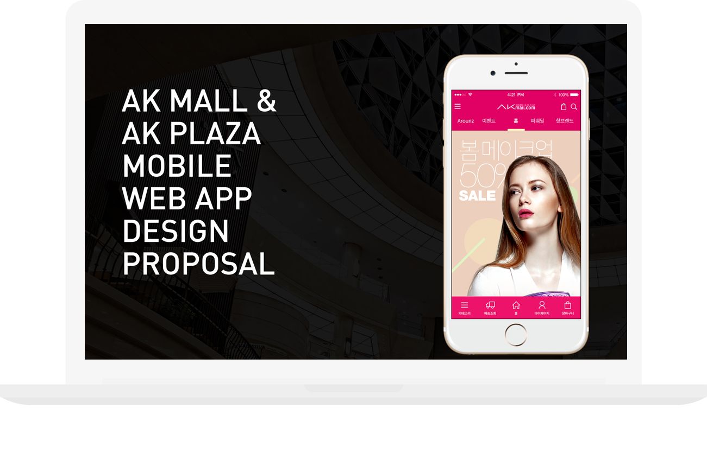

AKMall & AKPlaza 모바일 제안
2016.04

참여도
50%
작업내용
인턴 과정 중 제안 작업을 처음 접하게 되었는데, ak mall & ak plaza 모바일페이지를 각각 2개의 디자인 타입으로 시연하였다.
제안 발표용 시연 작업이었기에, 인터렉션에 중점을 두었고, 모바일 전용 제안이었기에 배경도 모바일 전용으로 설정하였다.
그 때문에 fixed 되는 위치나 효과를 줄 때 혼동이 되는 부분도 있었지만, 모바일 작업 시 주의할 점 등 익힐 수 있었다.
공통으로 상,하단 고정되는 효과, 중간 gnb 바가 가운데 정렬되는 스크립트 작업 등 간단한 인터렉션을 적용하여, 디자인이 더 돋보이고, 작동에 용이하도록 작업하였다.